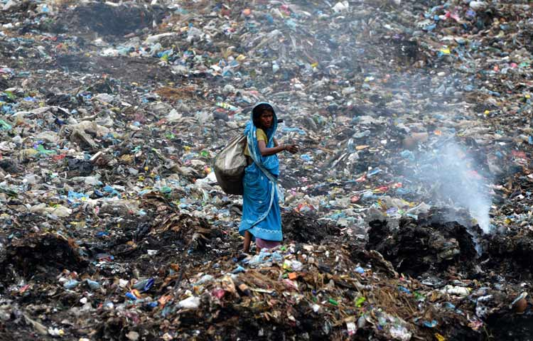
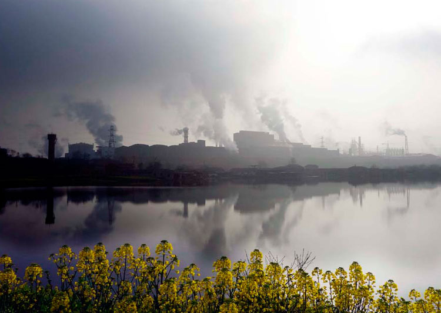

如果你觉得空气质量太差，那是你还不知道水有多脏；如果你觉得水已经很脏了，那是你还不知道土地有多毒。地球的美已在不知不觉的时候变的残破不堪，原本美好的家园已千疮百孔……很多人为了生活在更干净的环境里而逃离北京、逃离城市，到乡村种菜养花，但乡村也不一定靠谱了，如果地球人阻止不了你的话那建议你去太空开辟居住地吧！
在当今世界里，环境已向全人类亮出了黄牌，并开始对人类愚蠢的行动进行疯狂的报复。这种无休止的报复不仅将导致我们遭受更大灾难，而且有可能把我们从这个星球开除出去。不是小编吓唬你，这的的确确是我们现在和未来所面临的严峻课题。
人类对环境污染问题的了解程度仍然很弱，破坏资源和生态环境的现象近年来有增无减，各类污染行为从未停止过。尤其是发展中国家，为了生存和眼前短暂的利益，不停的榨取自然环境中的剩余资源。环境问题由局部已经发展到全球，问题越来越突出。
人口剧增和经济发展的压力， 正在超过地球自然系统的承受力，使大气、水体受到污染，气候发生异常，资源枯竭，不少物种濒临灭绝……地球上生态系统正在继续遭到破坏。
据世界卫生组织估计，发展中国家5岁以下的3. 4亿儿童中（中国除外）每年发生腹泻达10亿人次，其中死亡460万儿童，死亡原因是饮用不清洁的所致。物种灭绝也向人发出了严重警告。据报导，1988年世界已有1200种动物濒临绝灭，平均每天消失2—3种植物。1988年11月1日英国沃尔德沃奇研究所公布: 世界环境难民的人数有1300万人， 接近由于政治动乱和战争造成的政治难民的人数。
其实在很多年前，环保人士就意识到环境问题的重要性了！1969年美国民主党参议员盖洛德·尼尔森在美国各大学举行演讲会，筹划在次年的4月22日组织以反对越战为主题的校园运动，但是在1969年西雅图召开的筹备会议上，活动的组织者之一，哈佛大学法学院学生丹尼斯·海斯提出将运动定位为全美国的、以环境保护为主题的草根运动。这个提议得到了很多人的支持，几经演化后再2009年4月22日的第63届联合国大会上得到了正式的确认，此后每年的4月22日是世界地球日。
1、每年的4月22日是世界地球日，设立这个节日是为了使每一位地球居民都为改善地球环境作出贡献；
2、不要只在地球日过地球日，每天都要爱护环境，为环保作出自己的一份贡献。